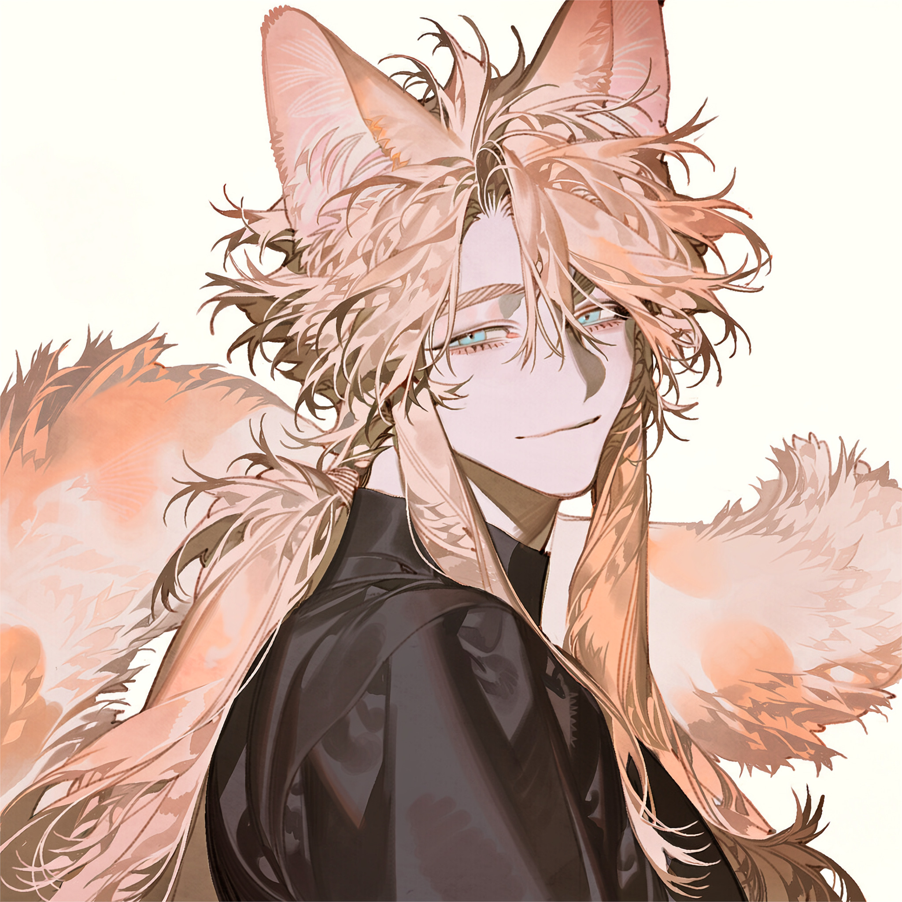

CHARACTER RECORD / 005STATUS: AVAILABLE

✦IMAGE
NOT FOUND
NOT FOUND
フェン
✦ APPEARANCE ONLY
見た目のみ
PROMPT DATATXT / 0051 male, adult male, beautiful face, slender, masterpiece, ultra detail,
tsurime, cat eyes, feline eyes, sharp eyes, narrow eyes, light blue eyes, pale blue eyes, grayish blue eyes, icy blue eyes, eyes colored #88b5d3,
asymmetrical center-parted bangs, asymmetrical bangs, extremely long hair, floor-length hair, fluffy hair, soft fluffy hair, voluminous hair, airy hair, silky hair, low ponytail, pale beige hair, light beige hair, main hair color #ecd3af, secondary hair color #f9c89b, secondary hair color #6f5436, mottled hair, irregular color patches, mottled peach beige and warm brown throughout the hair, natural multi-tone hair, blended hair colors, face-framing strands,
cat tail, long cat tail, extra long tail, thick cat tail, fluffy cat tail, bushy cat tail, very fluffy tail, very bushy tail, soft fur, dense fur, voluminous tail, plush tail, pale beige tail, hair colored #ecd3af, peach beige patches, warm brown patches, secondary color #f9c89b, secondary color #6f5436, mottled tail, irregular color patches, marbled fur pattern, multi-tone tail, natural color variation,
gentle aura, kind atmosphere, calm demeanor, approachable, gentle expression, soft expression, serene presence, elegant, graceful, subtle charm, slightly alluring, mature charm, quiet confidence,